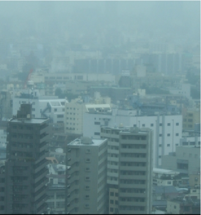
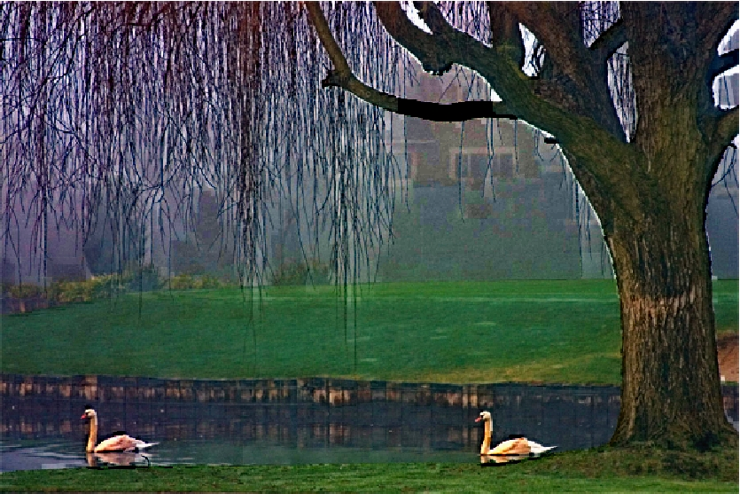
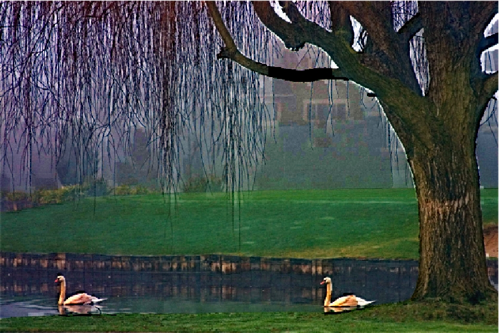

"Visibility in Bad Weather from A Single Image" [PDF]
A method for visibility enhancement that only requires a single input image is introduced. It is based on two basic observations: first, images with enhanced visibility (or clear-day images) have more contrast than images plagued by bad weather; second, airlight whose variation mainly depends on the distance of objects to the viewer, tends to be smooth. Relying on these two observations, we develop a cost function in the framework of Markov random fields. The method does not require the geometrical information of the input image, and is applicable for both color and gray images. The following experimental results show the effectiveness of our method.
(Due to intellectual property rights that legally bind me, unfortunately I cannot release the code)
|  |


|

|

|


|
 

|